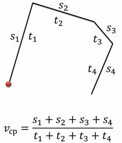
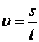
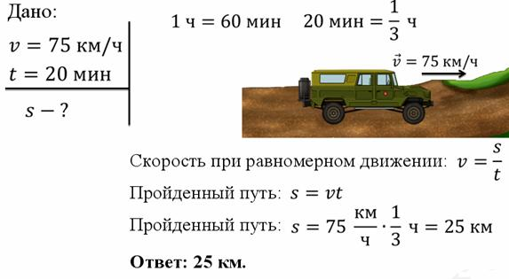
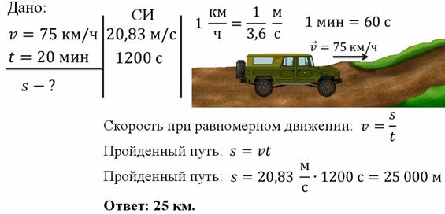
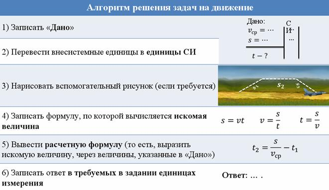

Говоря о движении, всегда нужно уточнять, относительно чего вы рассматриваете движение. Итак, М Е Х А Н И Ч Е С К О Е Д В И Ж Е Н И Е – это изменение положения тела относительно других тел с течением времени. Только указав, относительно чего рассматривается движение, можно получить однозначный ответ на вопрос о том, двигается тело, или нет. Рассмотрим пример: допустим, мимо пешехода проезжает машина. Конечно, можно сказать, что она двигается. Но вот, водитель, находящийся в этой машине, двигается вместе с ней. Значит, относительно него, машина покоится. Можно привести еще один пример: человек заметил НЛО, улетающий от самолета на восток.
Механическое движение всегда относительно. Когда тело двигается в пространстве, оно двигается по некоторой линии. Эта линия называется траекторией. Например, когда самолет пролетает в небе, он оставляет за собой след – эту линию мы можем называть траекторией. Траектория может быть прямой или кривой, она вообще может быть сколь угодно сложной.
Длину траектории можно измерить. Эта величина называется путём. Итак, путь – это физическая величина, равная длине траектории, по которой двигалось тело в течение данного промежутка времени. Известно что, у каждой физической величины (да и не только физической) есть обозначение. В физике, путь обозначается латинской буквой s. В международной системе СИ, путь измеряется в метрах (м).
Для удобства при рассмотрении механического движения часто используется такое понятие как материальная точка. Материальная точка – это тело, размерами которого можно пренебречь в условиях данной задачи. Рассмотрим на примере, что это значит. Если рассмотреть движение мяча по лавочке, то размерами мяча никак нельзя пренебречь, поскольку лавочка не так уж велика по сравнению с мячом.
Ранее мы изучили основные понятия, которые используются при работе с механическим движением. Но мы не говорили об одной важной характеристике – о равномерности движения. Равномерное движение – это движение, при котором тело за любые равные промежутки времени проходит равные пути. Неравномерное движение – это такое движение, при котором тело за равные промежутки времени проходит разные пути. Помимо равномерности, движение характеризуется быстротой. Вводится величина, характеризующая быстроту движения – скорость. Скорость тела при равномерном движении – это физическая величина, равная отношению пути ко времени, за которое этот путь пройден.Скорость обозначается латинской буквой u. В системе СИ время измеряется в секундах, а скорость – в метрах в секунду (м/с). У скорости, помимо числового значения, есть ещё и направление. То есть, скорость – это такая величина, которая характеризуется как числовым значением, так и направлением. Такие величины называются векторными. Все векторные величины обозначаются не просто буквой, а буквой со стрелочкой над ней. Итак, скорость – это векторная величина. А вот, например, путь или время можно охарактеризовать только числовыми значениями (они не имеют направления). Такие величины называются скалярными.
Для векторных величин важно не только числовое значение, но и направление
Теперь рассмотрим неравномерное движение. Для характеристики неравномерного движения тела вводится понятие средней скорости. Средняя скорость тела при неравномерном движении – это отношение пройденного пути к промежутку времени, за который этот путь пройден.

Скорость при равномерном движении – это величина, равная отношению пройденного пути к промежутку времени, за который этот путь пройден.

Рассмотрим пару задач. Запись и решение каждой оформляется специальным образом через "дано".

Когда в задаче даны величины не в системе СИ, их переводят и значения записывают в отдельный столбец.

Выведем алгоритм для решения задач:
